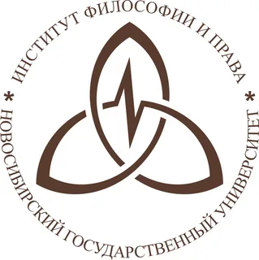
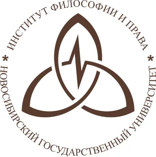

Чувствуете, что отстаёте?
Академический мир меняется стремительно. Объемы информации растут, а традиционные методы анализа уже не справляются. Пока вы тратите недели на ручной поиск и обработку источников, конкуренция в научной среде усиливается, а страх «цифрового разрыва» становится реальной угрозой для карьеры.
Превратите ИИ из угрозы в вашего личного ассистента
Искусственный интеллект — это не замена исследователя, а мощный инструмент в его руках. Мы научим вас искусству промпт-инжиниринга — ключевому навыку для эффективного взаимодействия с нейросетями. Это позволит вам:
- Экономить время: Сократите рутинные задачи по поиску и систематизации информации.
- Повысить качество: Анализируйте большие объемы данных и находите неочевидные связи в текстах.
- Увеличить продуктивность: Ускорьте подготовку публикаций, докладов и аналитических отчетов.
Промпт-инжиниринг: ИИ-помощник в научных исследованиях
Это не очередной теоретический курс о технологиях. Это практикум, где вы получите реальные навыки для решения исследовательских задач. Научитесь ставить нейросетям правильные задачи для написания статей, подготовки докладов и анализа сложных философских концепций.
Начать обучение Скачать программуКто мы?
«Цифровая философия» — это научно-исследовательский проект, созданный на базе кафедры антропологии Института философии Санкт-Петербургского государственного университета. Наша цель — объединить гуманитарные и технические науки, чтобы вместе отвечать на вызовы новой эпохи.
Руководитель проекта — Дмитрий Ярочкин, координатор Лаборатории цифровой философии СПбГУ, исследователь и практик в области применения ИИ в гуманитарных науках.
Нам доверяют
Мы не просто обучаем, а формируем повестку дня в области цифровой гуманитаристики. Наши исследования регулярно представляются на ведущих научных площадках.
.png)
 
